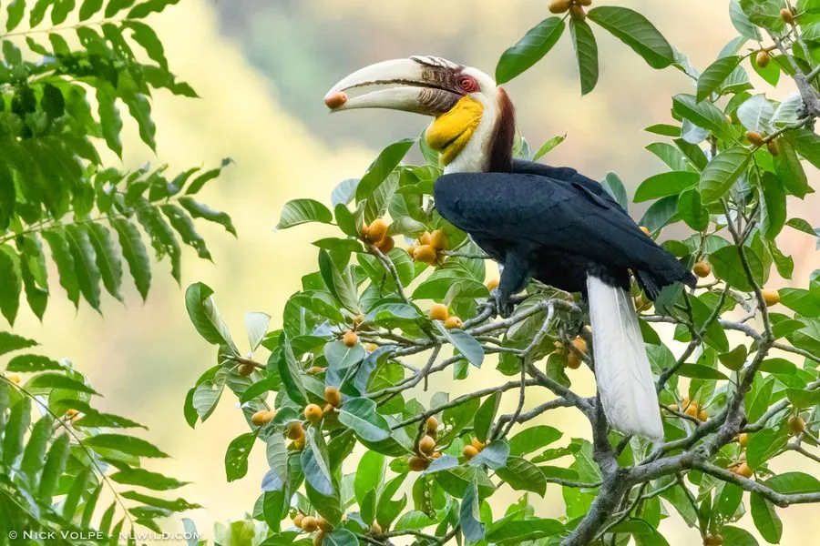

鸟类 · 动物界
花冠皱盔犀鸟 Rhyticeros undulatus

黑色羽衣配白色尾羽，盔突低矮且具横向皱纹，喉囊可膨胀。常成排飞越雨林林冠，是东南亚低地雨林依赖大树洞的旗舰鸟类。
- 分类
- 门脊索动物门纲鸟纲目犀鸟目科犀鸟科属皱盔犀鸟属
- 栖息环境
- 低地常绿雨林、季雨林与林缘，依赖高大枯立木形成的天然树洞。
- 地理分布
- 喜马拉雅东部、东南亚至中国云南西南部；中国境内罕见。
- 保护级别
- IUCN 红色名录列为易危（VU）；中国国家一级保护野生动物，列入 CITES 附录一。
物种志
花冠皱盔犀鸟体长约七十五至一百厘米，体重一千七百至三千六百克。通体黑色，尾羽纯白，翼端和尾缘黑色，形成强烈对比。喙淡黄色，盔突低矮，上表面有一系列横向皱纹，“皱盔”之名由此而来。雄鸟喉部裸皮呈黄色并具黑色横带，雌鸟喉部为蓝色。眼周裸皮淡蓝，虹膜深褐，脚黑色。
它栖息于低地常绿雨林和季雨林，常成数十只的群体飞越林冠，排成斜线或“V”字形，翅膀扇动发出明显的声响。主食各种果实，尤其依赖无花果，也吃昆虫和小型动物。繁殖期在巨大的枯立木树洞中营巢，雌鸟封洞育雏，雄鸟负责送食，每窝通常一只雏鸟。花冠皱盔犀鸟分布于喜马拉雅东部、东南亚至中国云南西南部，对大树洞的依赖使其易受森林砍伐影响，被列为易危物种和国家一级保护动物。
形态与习性
- 体长75–100 厘米
- 体重1700–3600 克
- 食性果实为主，尤其依赖无花果
- 繁殖大树洞封巢育雏，通常 1 只
- 特征低矮盔突具横向皱纹，尾羽纯白
- 保护级别国家一级；IUCN 易危；CITES 附录一
趣味知识
- 雄鸟喉囊黄色带黑带，雌鸟喉囊蓝色。
- 群体飞越林冠时常排成整齐的斜线。
- 必须依赖巨大的老龄树洞繁殖，对森林砍伐极敏感。